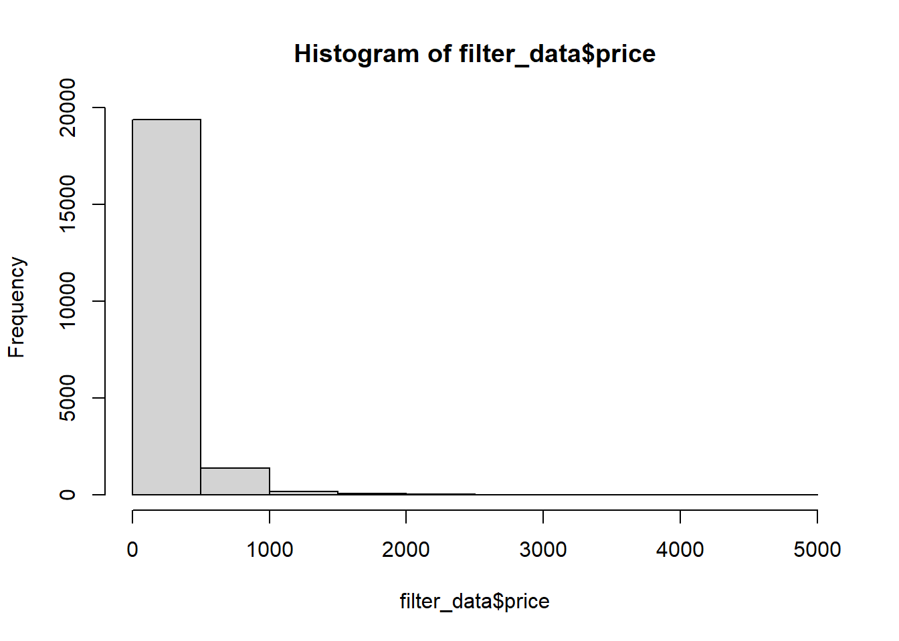
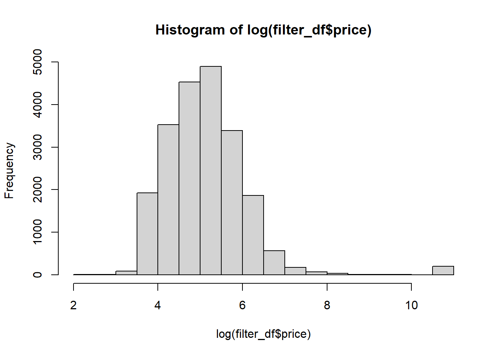
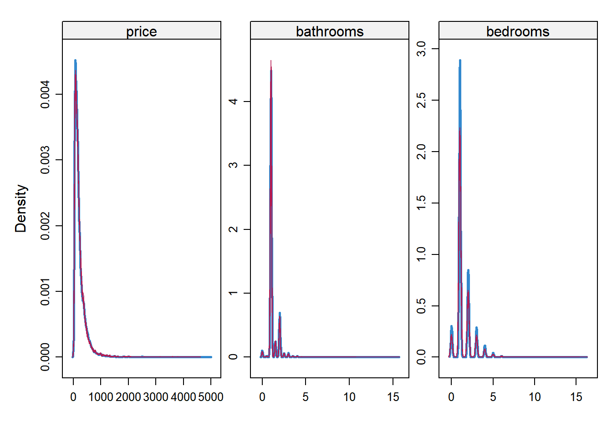
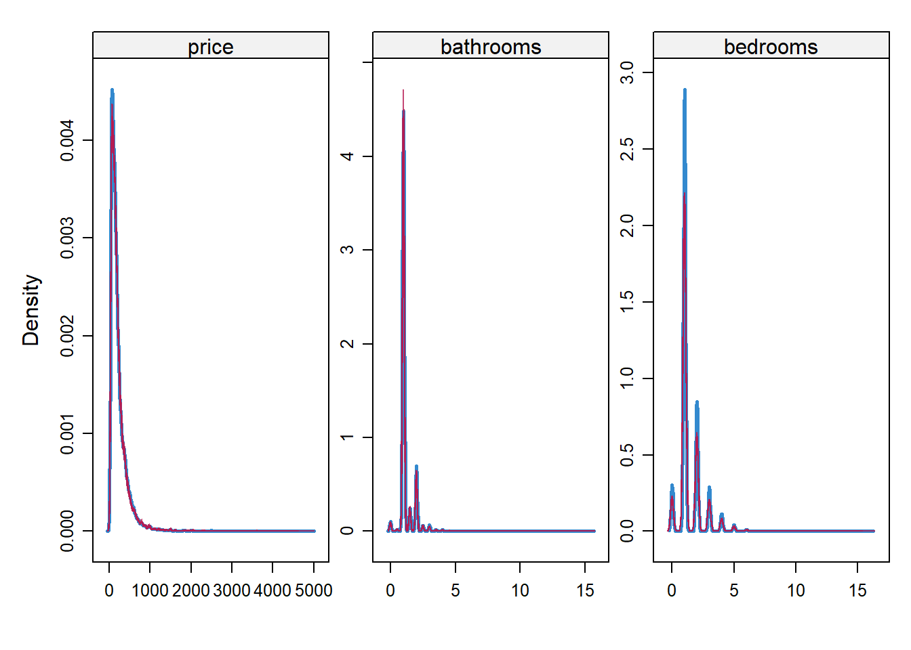

# # adding this just so I can render this file - Jesus R.
# library(tidyverse)
# source("data_pull.R")
#
# filter_df <-
# df %>%
# select(1,6,7,8,10,13,15,16,17,18,19,23,24,28,29,30:41)
# Sorry I couldn't get it to render, I didn't change anything, I only added this code chunk.data exploration
library(tidyverse)── Attaching core tidyverse packages ──────────────────────── tidyverse 2.0.0 ──
✔ dplyr 1.1.4 ✔ readr 2.1.5
✔ forcats 1.0.0 ✔ stringr 1.5.1
✔ ggplot2 4.0.0 ✔ tibble 3.3.0
✔ lubridate 1.9.4 ✔ tidyr 1.3.1
✔ purrr 1.1.0
── Conflicts ────────────────────────────────────────── tidyverse_conflicts() ──
✖ dplyr::filter() masks stats::filter()
✖ dplyr::lag() masks stats::lag()
ℹ Use the conflicted package (<http://conflicted.r-lib.org/>) to force all conflicts to become errorssource("data_pull.R")Warning: package 'rcompendium' was built under R version 4.5.2filter_df <-
df %>%
select(1,6,7,8,10,13,15,16,17,18,19,23,24,28,29,30:41)
## fixing missing values
filter_df[filter_df == "N/A"] <- NA
filter_df[filter_df == ""] <- NA
filter_df[filter_df == "[]"] <- NA
filter_df[filter_df == "-"] <- NA
## changing price from chr to numeric
filter_df <-
filter_df %>%
mutate(
price = str_remove_all(price, "\\$"),
price = str_remove_all(price, "\\,"),
price = as.numeric(price),
id = as.factor(id)
)
filter_data <- filter_df %>%
filter(price < 5000 | is.na(price))
sum(is.na(filter_data$price))[1] 14783hist(filter_data$price)
hist(log(filter_df$price))
latlong <- data.frame(
latitude = c(max(filter_df$latitude),min(filter_df$latitude)),
longitude = c(max(filter_df$longitude),min(filter_df$longitude)))
model_dat <- filter_data %>%
select("price","latitude","longitude","bathrooms","bedrooms")
model1 <- glm(price ~ latitude + longitude + bathrooms + bedrooms, family = Gamma(link = "log"), data = model_dat)
summary(model1)
Call:
glm(formula = price ~ latitude + longitude + bathrooms + bedrooms,
family = Gamma(link = "log"), data = model_dat)
Coefficients:
Estimate Std. Error t value Pr(>|t|)
(Intercept) -4.020e+02 1.018e+01 -39.47 <2e-16 ***
latitude 1.572e+00 1.214e-01 12.95 <2e-16 ***
longitude -4.636e+00 1.179e-01 -39.30 <2e-16 ***
bathrooms 2.843e-01 1.484e-02 19.15 <2e-16 ***
bedrooms 1.452e-01 8.188e-03 17.74 <2e-16 ***
---
Signif. codes: 0 '***' 0.001 '**' 0.01 '*' 0.05 '.' 0.1 ' ' 1
(Dispersion parameter for Gamma family taken to be 1.067019)
Null deviance: 15194 on 20998 degrees of freedom
Residual deviance: 11706 on 20994 degrees of freedom
(14876 observations deleted due to missingness)
AIC: 262196
Number of Fisher Scoring iterations: 8exp(coef(model1)) (Intercept) latitude longitude bathrooms bedrooms
2.685846e-175 4.814182e+00 9.700435e-03 1.328789e+00 1.156328e+00 library(mice)
Attaching package: 'mice'The following object is masked from 'package:stats':
filterThe following objects are masked from 'package:base':
cbind, rbindimp <- mice(model_dat, m = 5, method = "pmm", maxit = 10, seed = 123)
iter imp variable
1 1 price bathrooms bedrooms
1 2 price bathrooms bedrooms
1 3 price bathrooms bedrooms
1 4 price bathrooms bedrooms
1 5 price bathrooms bedrooms
2 1 price bathrooms bedrooms
2 2 price bathrooms bedrooms
2 3 price bathrooms bedrooms
2 4 price bathrooms bedrooms
2 5 price bathrooms bedrooms
3 1 price bathrooms bedrooms
3 2 price bathrooms bedrooms
3 3 price bathrooms bedrooms
3 4 price bathrooms bedrooms
3 5 price bathrooms bedrooms
4 1 price bathrooms bedrooms
4 2 price bathrooms bedrooms
4 3 price bathrooms bedrooms
4 4 price bathrooms bedrooms
4 5 price bathrooms bedrooms
5 1 price bathrooms bedrooms
5 2 price bathrooms bedrooms
5 3 price bathrooms bedrooms
5 4 price bathrooms bedrooms
5 5 price bathrooms bedrooms
6 1 price bathrooms bedrooms
6 2 price bathrooms bedrooms
6 3 price bathrooms bedrooms
6 4 price bathrooms bedrooms
6 5 price bathrooms bedrooms
7 1 price bathrooms bedrooms
7 2 price bathrooms bedrooms
7 3 price bathrooms bedrooms
7 4 price bathrooms bedrooms
7 5 price bathrooms bedrooms
8 1 price bathrooms bedrooms
8 2 price bathrooms bedrooms
8 3 price bathrooms bedrooms
8 4 price bathrooms bedrooms
8 5 price bathrooms bedrooms
9 1 price bathrooms bedrooms
9 2 price bathrooms bedrooms
9 3 price bathrooms bedrooms
9 4 price bathrooms bedrooms
9 5 price bathrooms bedrooms
10 1 price bathrooms bedrooms
10 2 price bathrooms bedrooms
10 3 price bathrooms bedrooms
10 4 price bathrooms bedrooms
10 5 price bathrooms bedroomsfit1 <- with(imp, glm(price ~ latitude + longitude + bathrooms + bedrooms, family = Gamma(link = "log")))
pooled <- pool(fit1)
summary(pooled) term estimate std.error statistic df p.value
1 (Intercept) -407.9685898 9.33299355 -43.71251 67.27789 3.975125e-51
2 latitude 2.0098308 0.13446548 14.94682 14.52755 3.200430e-10
3 longitude -4.4750377 0.10947208 -40.87835 63.30751 3.157393e-47
4 bathrooms 0.3090215 0.01524357 20.27226 16.67604 3.498903e-13
5 bedrooms 0.1360081 0.00835053 16.28736 20.73738 2.733155e-13exp(pooled$pooled$estimate)[1] 6.629681e-178 7.462055e+00 1.138979e-02 1.362092e+00 1.145691e+00library(sf)Warning: package 'sf' was built under R version 4.5.2Linking to GEOS 3.13.1, GDAL 3.11.4, PROJ 9.7.0; sf_use_s2() is TRUEpoints <- st_as_sf(model_dat, coords = c("longitude", "latitude"), crs = 4326)
points_utm <- st_transform(points, crs = 32618)
points_utmSimple feature collection with 35875 features and 3 fields
Geometry type: POINT
Dimension: XY
Bounding box: xmin: 563382.4 ymin: 4483573 xmax: 608778.6 ymax: 4529571
Projected CRS: WGS 84 / UTM zone 18N
First 10 features:
price bathrooms bedrooms geometry
1 66 1 1 POINT (591377 4511233)
2 NA NA 1 POINT (585024.9 4508511)
3 NA NA NA POINT (584083.7 4499944)
4 NA NA 1 POINT (587785.9 4504165)
5 76 2 1 POINT (585916.3 4508336)
6 97 1 2 POINT (597565.2 4504131)
7 NA NA NA POINT (591786.7 4505416)
8 60 1 2 POINT (589273.8 4507453)
9 425 4 3 POINT (589482.1 4503121)
10 240 1 0 POINT (585631.1 4511895)coords <- st_coordinates(points_utm) # gives X = easting, Y = northing
# Combine with price (variable to impute)
updates <- data.frame(
price = model_dat$price,
X = scale(coords[,1]),
Y = scale(coords[,2]),
bathrooms = model_dat$bathrooms,
bedrooms = model_dat$bedrooms
)
sum(is.na(updates$price))[1] 14783summary(updates) price X Y bathrooms
Min. : 10.0 Min. :-5.4878 Min. :-4.07830 Min. : 0.00
1st Qu.: 88.0 1st Qu.:-0.6608 1st Qu.:-0.70789 1st Qu.: 1.00
Median : 152.0 Median :-0.1414 Median :-0.04646 Median : 1.00
Mean : 228.2 Mean : 0.0000 Mean : 0.00000 Mean : 1.19
3rd Qu.: 271.0 3rd Qu.: 0.3500 3rd Qu.: 0.60003 3rd Qu.: 1.00
Max. :4958.0 Max. : 4.2709 Max. : 3.26778 Max. :15.50
NA's :14783 NA's :14411
bedrooms
Min. : 0.000
1st Qu.: 1.000
Median : 1.000
Mean : 1.385
3rd Qu.: 2.000
Max. :16.000
NA's :5949 cor(updates$price, updates$Y)[1] NAcor_matrix <- cor(updates, use = "pairwise.complete.obs", method = "pearson")
impA <- mice(updates, m = 5, method = "pmm", seed = 123)
iter imp variable
1 1 price bathrooms bedrooms
1 2 price bathrooms bedrooms
1 3 price bathrooms bedrooms
1 4 price bathrooms bedrooms
1 5 price bathrooms bedrooms
2 1 price bathrooms bedrooms
2 2 price bathrooms bedrooms
2 3 price bathrooms bedrooms
2 4 price bathrooms bedrooms
2 5 price bathrooms bedrooms
3 1 price bathrooms bedrooms
3 2 price bathrooms bedrooms
3 3 price bathrooms bedrooms
3 4 price bathrooms bedrooms
3 5 price bathrooms bedrooms
4 1 price bathrooms bedrooms
4 2 price bathrooms bedrooms
4 3 price bathrooms bedrooms
4 4 price bathrooms bedrooms
4 5 price bathrooms bedrooms
5 1 price bathrooms bedrooms
5 2 price bathrooms bedrooms
5 3 price bathrooms bedrooms
5 4 price bathrooms bedrooms
5 5 price bathrooms bedroomsfit <- with(impA, glm(price ~ X*Y+ bathrooms + bedrooms, family = Gamma(link = "log")))
pooled <- pool(fit)
summary(pooled) term estimate std.error statistic df p.value
1 (Intercept) 4.7948538 0.019659143 243.89943 11.52867 9.125873e-23
2 X -0.3033621 0.006746636 -44.96494 33.91569 8.097863e-32
3 Y 0.1398278 0.008450669 16.54636 10.03385 1.301652e-08
4 bathrooms 0.3044649 0.016385307 18.58158 12.09070 2.934128e-10
5 bedrooms 0.1429051 0.008746120 16.33926 15.06207 5.416008e-11
6 X:Y -0.1206608 0.004588434 -26.29672 508.93009 6.795589e-97exp(pooled$pooled$estimate)[1] 120.8867103 0.7383317 1.1500757 1.3558993 1.1536203 0.8863346densityplot(impA)
densityplot(imp)
get_avg_fit <- function(model) {
models <- model$analyses # list of glm fits (one per imputation)
aic_vals <- sapply(models, AIC)
deviance_vals <- sapply(models, function(m) m$deviance)
data.frame(
mean_AIC = mean(aic_vals),
mean_deviance = mean(deviance_vals)
)
}
total_fit <- data.frame(
Total_Fit_latlong = get_avg_fit(fit1),
Total_Fit_utm = get_avg_fit(fit))
total_fit Total_Fit_latlong.mean_AIC Total_Fit_latlong.mean_deviance
1 448855.2 20219.95
Total_Fit_utm.mean_AIC Total_Fit_utm.mean_deviance
1 447362.7 19396.73updates$lat <- model_dat$latitude
updates$long <- model_dat$longitude
data_mask <- updates
data_mask$y2 <- data_mask$Y^2
data_mask$x2 <- data_mask$X^2
data_mask$xy <- data_mask$X*data_mask$Y
data_mask$latlong <- data_mask$lat*data_mask$long
mask <- sample(which(!is.na(data_mask$price)), size = floor(0.1 * nrow(data_mask)))
data_mask$price_mask <- data_mask$price
data_mask$price_mask[mask] <- NA
library(mice)
# Only impute price
meth <- make.method(data_mask)
meth[] <- ""
meth["price_mask"] <- "pmm"
predA <- make.predictorMatrix(data_mask)
predA[, ] <- 0
predA["price_mask", c("X","Y","xy")] <- 1
predB <- make.predictorMatrix(data_mask)
predB[, ] <- 0
predB["price_mask", c("lat","long","latlong")] <- 1
predC <- make.predictorMatrix(data_mask)
predC[, ] <- 0
predC["price_mask", c("X","Y","lat","long","xy","latlong")] <- 1
impA <- mice(data_mask, m = 5, method = meth, predictorMatrix = predA, seed = 145)
iter imp variable
1 1 price_mask
1 2 price_mask
1 3 price_mask
1 4 price_mask
1 5 price_mask
2 1 price_mask
2 2 price_mask
2 3 price_mask
2 4 price_mask
2 5 price_mask
3 1 price_mask
3 2 price_mask
3 3 price_mask
3 4 price_mask
3 5 price_mask
4 1 price_mask
4 2 price_mask
4 3 price_mask
4 4 price_mask
4 5 price_mask
5 1 price_mask
5 2 price_mask
5 3 price_mask
5 4 price_mask
5 5 price_maskimpB <- mice(data_mask, m = 5, method = meth, predictorMatrix = predB, seed = 276)
iter imp variable
1 1 price_mask
1 2 price_mask
1 3 price_mask
1 4 price_mask
1 5 price_mask
2 1 price_mask
2 2 price_mask
2 3 price_mask
2 4 price_mask
2 5 price_mask
3 1 price_mask
3 2 price_mask
3 3 price_mask
3 4 price_mask
3 5 price_mask
4 1 price_mask
4 2 price_mask
4 3 price_mask
4 4 price_mask
4 5 price_mask
5 1 price_mask
5 2 price_mask
5 3 price_mask
5 4 price_mask
5 5 price_maskWarning: Number of logged events: 25impC <- mice(data_mask, m = 5, method = meth, predictorMatrix = predC, seed = 34908)
iter imp variable
1 1 price_mask
1 2 price_mask
1 3 price_mask
1 4 price_mask
1 5 price_mask
2 1 price_mask
2 2 price_mask
2 3 price_mask
2 4 price_mask
2 5 price_mask
3 1 price_mask
3 2 price_mask
3 3 price_mask
3 4 price_mask
3 5 price_mask
4 1 price_mask
4 2 price_mask
4 3 price_mask
4 4 price_mask
4 5 price_mask
5 1 price_mask
5 2 price_mask
5 3 price_mask
5 4 price_mask
5 5 price_maskWarning: Number of logged events: 27rmse_mask <- function(imp_obj, mask) {
# long format to average imputations
completed <- complete(imp_obj, "long") # .imp and .id columns
# average over imputations
avg_imp <- aggregate(price_mask ~ .id, data = completed, FUN = mean)
avg_imp <- avg_imp[order(avg_imp$.id), ]
# RMSE on masked indices
true_vals <- data_mask$price[mask]
pred_vals <- avg_imp$price_mask[mask]
sqrt(mean((pred_vals - true_vals)^2))
}
rmse_results <- data.frame(
Predictor_Set = c("UTM", "LatLong","Combined"),
RMSE = c(rmse_mask(impA, mask),
rmse_mask(impB, mask),
rmse_mask(impC,mask))
)
rmse_results Predictor_Set RMSE
1 UTM 266.9738
2 LatLong 260.6661
3 Combined 266.6315updates$lat <- model_dat$latitude
updates$long <- model_dat$longitude
data_mask <- updates
data_mask$y2 <- data_mask$Y^2
data_mask$x2 <- data_mask$X^2
data_mask$xy <- data_mask$X*data_mask$Y
data_mask$latlong <- data_mask$lat*data_mask$long
predictor_sets <- list(
UTM = predA,
LatLong = predB,
Combined = predC
)
library(mice)
simulate_rmse <- function(data, predictor_sets, n_sim = 10, mask_frac = 0.1, m = 5, seed = 123) {
set.seed(seed)
results <- list()
for (pred_name in names(predictor_sets)) {
rmse_vec <- numeric(n_sim)
for (i in 1:n_sim) {
# Mask a fraction of prices
mask_idx <- sample(which(!is.na(data$price)), size = floor(mask_frac * nrow(data)))
data$price_mask <- data$price
data$price_mask[mask_idx] <- NA
# Method vector
meth <- rep("", ncol(data))
names(meth) <- colnames(data)
meth["price_mask"] <- "pmm"
# Predictor matrix
pred <- predictor_sets[[pred_name]]
pred <- pred[colnames(data), colnames(data)]
# Run mice
imp <- mice(data, m = m, method = meth, predictorMatrix = pred, seed = seed + i, printFlag = FALSE)
# Compute RMSE using external function
rmse_vec[i] <- rmse_mask(imp, mask_idx)
}
results[[pred_name]] <- rmse_vec
}
return(results)
}
sim_results <- simulate_rmse(data_mask, predictor_sets, n_sim = 10, mask_frac = 0.1)Warning: Number of logged events: 25
Warning: Number of logged events: 25
Warning: Number of logged events: 25
Warning: Number of logged events: 25
Warning: Number of logged events: 25
Warning: Number of logged events: 25
Warning: Number of logged events: 25
Warning: Number of logged events: 25
Warning: Number of logged events: 25
Warning: Number of logged events: 25Warning: Number of logged events: 27
Warning: Number of logged events: 27
Warning: Number of logged events: 27
Warning: Number of logged events: 27
Warning: Number of logged events: 27
Warning: Number of logged events: 27
Warning: Number of logged events: 27
Warning: Number of logged events: 27
Warning: Number of logged events: 27
Warning: Number of logged events: 27summary_rmse <- data.frame(
Predictor_Set = names(sim_results),
Mean_RMSE = sapply(sim_results, mean),
SD_RMSE = sapply(sim_results, sd),
Min_RMSE = sapply(sim_results, min),
Max_RMSE = sapply(sim_results, max)
)
summary_rmse Predictor_Set Mean_RMSE SD_RMSE Min_RMSE Max_RMSE
UTM UTM 276.8703 9.385969 265.5028 289.2337
LatLong LatLong 282.6703 8.365679 268.4691 294.0157
Combined Combined 278.2362 8.573709 265.5028 289.2337